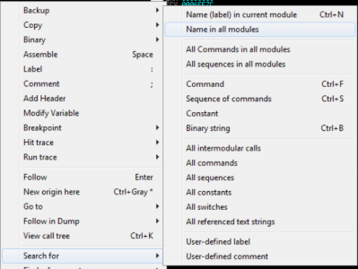
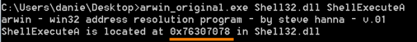

Search for the address of function in executable/dll that we want to call
Search for the address of function in executable/dll that we want to call
•
From Immunity Debugger: 1. Load the executable/dll in Immunity Debugger
2. Search for → Name in all modules
 The function has to be in the
.text region of the stack
Once we have found it, we have to annotate the address
•
arwin tool (
http://www.vividmachines.com/shellcode/arwin.c):
